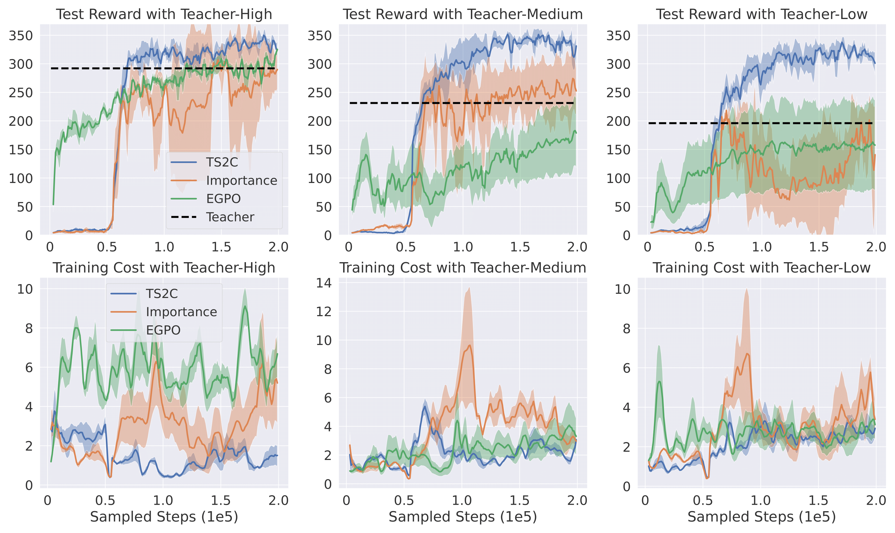
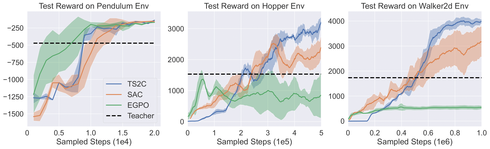

The training result with three different levels of teacher policy can be seen in Fig. 3.
The first row shows that the performance of TS2C is not limited by the imperfect teacher policies.
It converges within 200k steps, independent of different performances of the teacher.
EGPO and Importance Advicing is clearly bounded by teacher-medium and teacher-low,
performing much worse than TS2C with imperfect teachers. The second row of Fig. 3 shows TS2C has lower training cost than both algorithms.

Fig. 3: Comparison between our method TS2C and other algorithms with teacher policies providing
online demonstrations. "Importance" refers to the Importance Advising algorithm.
For each column, the involved teacher policy has high, medium, and low performance respectively.
The performances of TS2C in different MuJoCo environments are presented in Fig. 4. The figures show that
TS2C is generalizable to different environments. It can outperform SAC in all three MuJoCo environments taken into
consideration. On the other hand, though the EGPO algorithm has the best performance in the
Pendulum environment, it struggles in the other two environments, namely Hopper and Walker

Fig. 4: Performance comparison between our method TS2C and baseline algorithms on three
environments from MuJoCo.